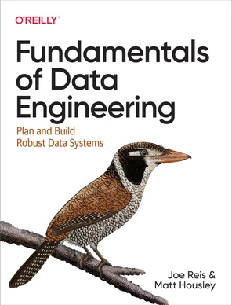
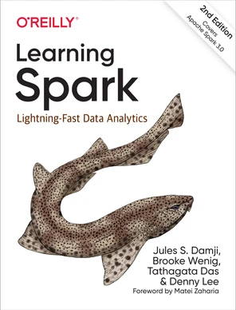

Organization
CS 431: Data-Intensive Distributed Computing (Fall 2026)
Staff
The instructor for this course is Jimmy Lin. If you're interested in my research, here is my homepage. I'm always eager to work with bright and self-motivated Waterloo undergraduates who wish to get involved with my research group. If this is you, look at this onboarding guide.
The course TAs are Arash Khalaji (mkhalaji), Kacie Phillippo (k2philli), and Felix Wang (t577wang).
If you have general questions, post on Piazza. If you have personal concerns, send us a private post on Piazza (private posts are only visible to me and the TAs). Unless you specifically have a reason to email me directly, please use Piazza.
Use of Coding Agents
Coding agents such as OpenAI's Codex and Anthropic's Claude Code have revolutionized how software engineers write code, build products, and interact with complex data platforms. For the university to remain relevant, I believe that it is imperative to weave the use of such tools into the fabric of this course, and more broadly, into the computer science curriculum. Learning to use these tools effectively and responsibly is one of the pedagogical goals of this course. To this end, you will not only be encouraged but required to use a coding agent throughout this course — particularly for assignments.
Course Materials
The most recent version of all materials for this course appears on this website, including the syllabus, readings, slides, and assignments. All news, information, updates, etc. will be posted on Piazza. It is your responsibility to stay up to date with everything posted there. "I didn't know" or "I didn't see it" is not a legitimate excuse.
Readings for this course will be assigned from a number of sources, including academic papers, web pages, and the following books:
- Designing Data-Intensive Applications, 2nd Edition, by Martin Kleppmann and Chris Riccomini. (2026)
- Fundamentals of Data Engineering, by Joe Reis, Matt Housley. (2022)


For learning Spark, sources abound on the web (or ask your coding agent), but if you prefer books, O'Reilly Media provides the following, also available for free through the university's library:
- Learning Spark, 2nd Edition, by Jules S. Damji, Brooke Wenig, Tathagata Das, Denny Lee. (2020)

Note the publication date of the book. The fundamentals remain the same, but many operational aspects (APIs, methods, invocations, etc.) are quite out of date.
All of the books above are available for free online through the university's library. The links above point directly to Waterloo proxied content, but if you're having trouble accessing the content (e.g., due to VPN settings), you might need to go through the library's portal (i.e., search for the book title and follow the appropriate link).
Grading
Components of the final grade for CS 431 are as follows:
| Component | Weight |
| Assignments | 35% |
| Midterm Exam | 30% |
| Final Exam | 35% |
| Total | 100% |
The homework assignments are to be completed individually. See the section on Academic Integrity below. Assignment deadlines are clearly stated on the syllabus.
Late policy: For assignments up to 24 hours late, we will take the grade you would have gotten and multiply it by 0.75 (i.e., 25% reduction). For assignments more than 24 hours late but at most 48 hours late, we will take the grade you would have gotten and multiply it by 0.5 (i.e., 50% reduction). Assignments more than 48 hours late will not be accepted. In all cases, we will round down. By default, we will mark your assignment at the deadline; if you want us to "hold off" on marking (and take the late penalty), you must let us know, and you must let us know when the assignment is ready for marking so we can compute the late penalty appropriately. For these communications, use private posts on Piazza.
Assignment marking reappraisal requests: If you believe we have made an error marking your assignment, you may request that your assignment be reappraised. Please send a private post on Piazza with the subject "Remark Request: A?-userid", for example, "Remark Request: A4-n85ahmed". In your post, clearly describe the reason for the remark request. Note that for each request, the entire assignment will be reconsidered, in addition to the highlighted issues. This means that your grade might be adjusted up or down — in the latter case, if we find an error that was missed the first time.
Late enrollment policy: Students who enroll late into the course must follow the lectures, complete the readings, and hand in all assignments on time. That is, late enrollment is not an acceptable excuse for late assignments, which will be subjected to the same late penalties as above.
Academic Integrity
All work in this course is to be done individually. One of the pedagogical goals of the course is to learn to use coding agents effectively and responsibly. We will discuss what this means throughout the course, but when in doubt, ask!
To be clear, asking your coding agent for help on the assignments is acceptable. The paragraphs below are mostly "boilerplate", as you will likely see versions and variants of them across all your courses. They may be outdated. What plagiarism means in the context of coding agents and AI is a moving target and quite difficult to define. I am happy to have an honest discussion in good faith regarding these issues. When in doubt, ask!
Incidents of suspected plagiarism or unauthorized collaboration will be reported to the office of the Associate Dean for Undergraduate Studies. The standard penalty for a first offence is a grade of zero for the assessment in question and a 5-mark deduction from the course grade. Note that in cases in which one individual provides assistance to another, the same penalty is normally applied to each. Subsequent offences are likely to result in more severe penalties, possibly including suspension or even expulsion.
To avoid inadvertently plagiarizing, you should discuss assignment issues with other students only in a very broad and high-level fashion. Do not take notes during such discussions and do not look at anyone else's assignment code, on screen or on paper. If you find yourself stuck, contact the TAs or the instructor for help. You are allowed to search the web for information about general issues, but do not try to search for solutions online or ask another person for a solution. The assignments are designed so that solutions are not available online, but if you inadvertently stumble onto a solution to any of the assignments, do not look at it. If you do find a solution online, however, please let us know—we will appreciate it and not construe it as plagiarism (unless, of course, you actually do copy the solution).
Senate Undergraduate Council has asked us to post the following paragraphs:
Academic Integrity: In order to maintain a culture of academic integrity, members of the University of Waterloo community are expected to promote honesty, trust, fairness, respect and responsibility.
Grievance: A student who believes that a decision affecting some aspect of his/her university life has been unfair or unreasonable may have grounds for initiating a grievance. Read Policy 70 - Student Petitions and Grievances, Section 4.
Discipline: A student is expected to know what constitutes academic integrity, to avoid committing academic offences, and to take responsibility for his/her actions. A student who is unsure whether an action constitutes an offence, or who needs guidance in learning how to avoid offences (e.g., plagiarism, cheating) or about "rules" for group work/collaboration should seek guidance from the course professor, academic advisor, or the Undergraduate Associate Dean. When misconduct has been found to have occurred, disciplinary penalties will be imposed under Policy 71 - Student Discipline. For information on categories of offences and types of penalties, students should refer to that policy.
Avoiding Academic Offences: Sometimes students are unaware of the line between acceptable and unacceptable academic behaviour, especially when discussing assignments with classmates and using the work of other students. For information on commonly misunderstood academic offences and how to avoid them, students should refer to the Faculty of Mathematics Academic Integrity Policy.
Appeals: A student may appeal the finding and/or penalty in a decision made under Policy 70 - Student Petitions and Grievances (other than regarding a petition) or Policy 71 - Student Discipline if a ground for an appeal can be established. Read Policy 72 - Student Appeals.
Accommodations
Illness policy: From time to time students become ill or have ongoing medical conditions that prevent them from meeting academic obligations. For these cases, please consult the university policy. For serious illness you will be granted a reasonable extension.
Short-Term Absence Policy: The university allows students to declare a short-term absence (see the registrar's note here). If you use this then you will get a 48-hour extension for the assignment due during your 48-hour period. You must contact us after declaring an STA so that you are not penalized.
Accommodations for Religious Holidays and Other Special Circumstances: Students wishing to discuss accommodations for religious holidays on dates that assignments are due, or other circumstances not addressed in this course information page, should discuss those circumstances with me before the third class session in order to permit adequate time for planning. Only accommodations for unforeseeable circumstances will be considered after that date.
Note for students with disabilities: AccessAbility Services, located in Needles Hall, collaborates with all academic departments to arrange appropriate accommodations for students with disabilities without compromising the academic integrity of the curriculum. If you require academic accommodations to lessen the impact of your disability, please register with them at the beginning of each academic term.